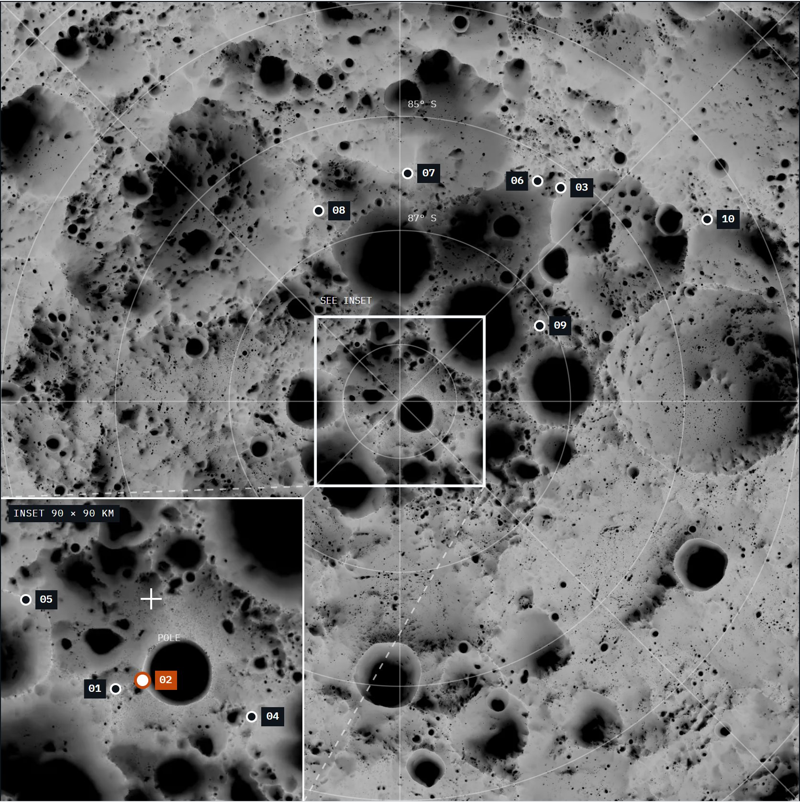
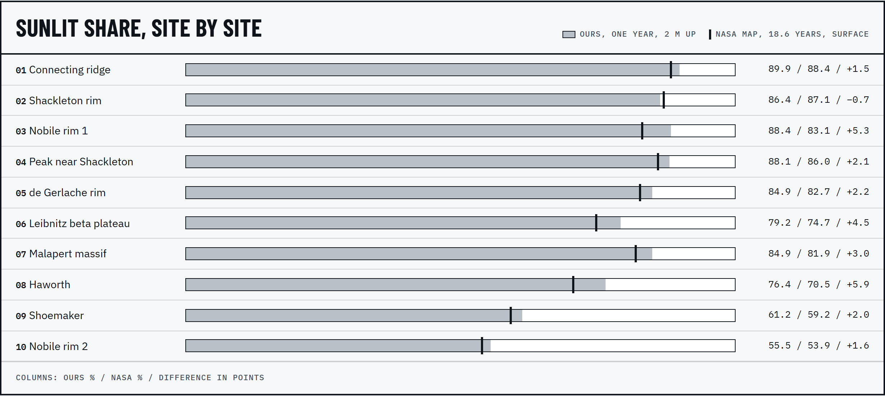
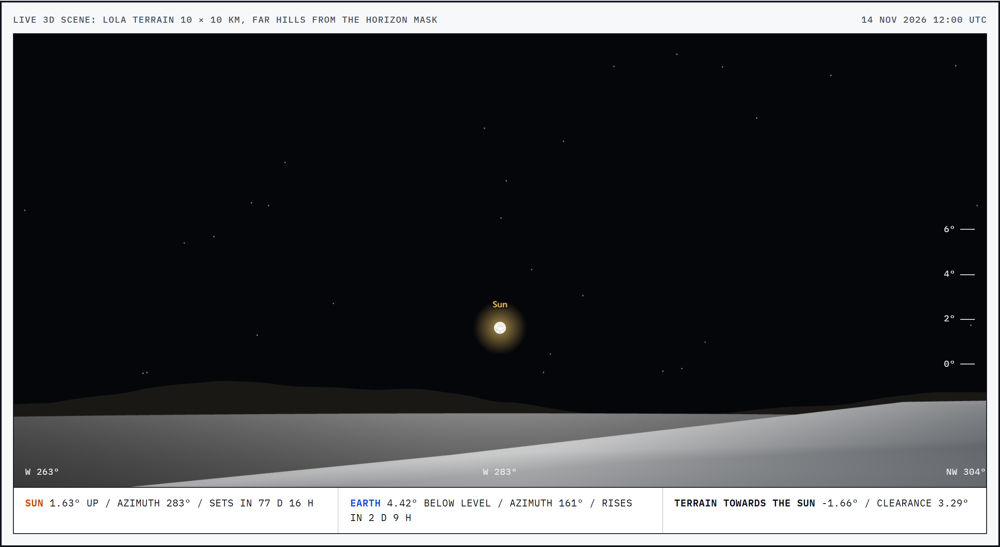
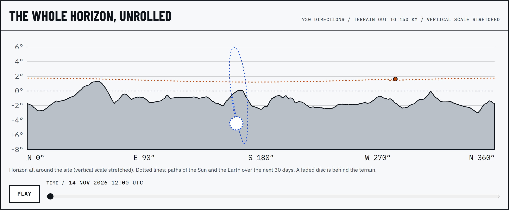

Where the Sun never quite sets
Pick a landing site and a date at the lunar south pole. See how long it stays in sunlight for power and when Earth is in view for a direct radio link, with the real mountains on the horizon.
evge14n.github.io/spaceu-lunar-navigator
Yevhen / Nazar / Anastasiia U. / Anastasiia Sh.

At the pole the Sun skims the horizon
It circles the whole horizon every 29.5 days and never climbs high.
When a panel goes from 1 m to 5 m above the ground (Barker et al. 2021).
Below the horizon: no direct radio even without any mountains.
A hill kilometres away, a few hundred metres of distance or a few days of delay decide whether a lander has power and can talk to Earth. Planners, teachers and the public need to see this per site and per date.
Compare sites and dates at a glance


NASA data, computed in advance
Same rule as NASA's illumination maps: the Sun counts as visible while any part of its disc is above the terrain.
Checked against NASA sources
0.00003°
largest difference, target was 0.01°
+2.7 points
on average (range −0.7 to +5.9): ours is 2 m up, theirs at the surface
The browser's own summary matches the server's for all 10 sites (automatic test).

Stand on the site and watch the sky


- 3D view at eye level from LOLA terrain, Sun and Earth in true directions and sizes, an elevation scale on the frame.
- "Why" sheet: five ideas in pictures for school students.
What we used, what comes next
- NAIF SPICE generic kernels (NASA/JPL)
- LOLA polar elevation models, LRO (PDS Geosciences)
- LOLA 5 m site models (PGDA, Barker et al. 2021)
- LOLA illumination maps (PGDA, Mazarico et al. 2011)
- JPL Horizons as the test reference
- Any point on the map computed in the browser
- Relay satellite windows when Earth is hidden
- More sites from published Artemis regions
evge14n.github.io/spaceu-lunar-navigator · github.com/Evge14n/spaceu-lunar-navigator